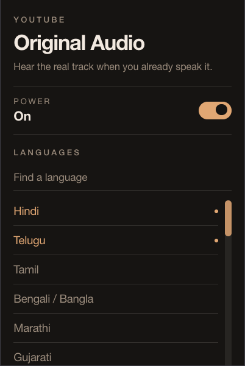

Browser extension
YouTube Original Audio
YouTube auto-dubs into your interface language. This flips it back to the original when that language is one you actually speak.

The problem
A Hindi video starts in English. A Telugu video too. You open settings, pick Hindi original, and the next video it’s back. There is no real off switch for auto-dub — only a hunt through Audio track on every video.
The fix
Pick the languages you understand. When a video’s original track matches, it switches. When it doesn’t, YouTube is left alone.
Install
Grab the zip from Releases, unzip it, then load that folder as an unpacked extension.
-
Chrome / Edge / Brave —
chrome://extensions→ Developer mode → Load unpacked -
Firefox —
about:debugging→ This Firefox → Load Temporary Add-on → pickmanifest.json
Or build with pnpm install && pnpm build and load
dist/.